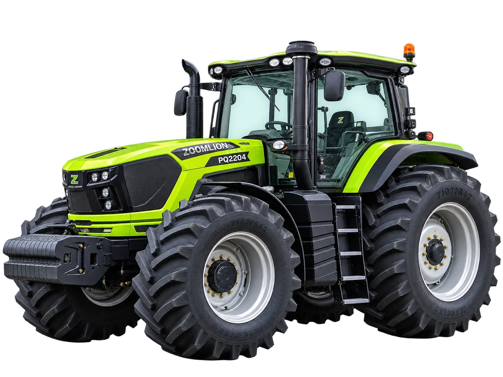

Traktor
Zoomlion PQ Series
PQ2604 / PQ2754
Rangkaian traktor bertenaga besar yang dirancang untuk pertanian keluarga, usaha pertanian berskala luas, dan penyedia jasa pertanian, dengan performa unggul pada beragam kondisi lahan dan aplikasi
Bandingkan dengan unit lain →Keunggulan
- Performa bertenaga: mesin dengan cadangan torsi 39,3% menghadirkan respons daya cepat di bawah beban tarik berat dan kondisi lahan yang berubah-ubah
- Driveline efisien: transmisi 48F+24R dengan rentang kecepatan kerja 0,24–38,85 km/jam, kerapatan gigi tinggi meningkatkan efisiensi bahan bakar dan fleksibilitas aplikasi
- Daya jelajah bahan bakar: tangki berkapasitas besar 630 L mendukung operasi berkelanjutan hingga 13 jam dalam sekali pengisian
- Kenyamanan operator: kursi bersuspensi udara dengan penyetelan tinggi, posisi maju-mundur, kekakuan suspensi, dan sudut sandaran
- Kendali cerdas: armrest multifungsi ergonomis dengan tinggi yang dapat disetel dan kendali mesin terintegrasi, serta operasi elektro-hidrolik melalui tombol, sakelar, dan putaran
- Perawatan ringan: sistem asupan udara dengan filter kering internal dan pre-cleaner eksternal, berkapasitas tampung debu 9,6 kg untuk memperpanjang interval servis
Spesifikasi
| Model Mesin | YCK09300-T301 (PQ2604) / YCK09320-T300 (PQ2754) |
|---|---|
| Tipe Mesin | 6 Silinder Inline, High Pressure Common Rail, Turbocharged |
| Cadangan Torsi | 39,3% (PQ2604) / 45% (PQ2754) |
| Kapasitas Tangki BBM | 630 L |
| Transmisi | Range Power Shift |
| Konfigurasi Gigi | 48F+24R |
| Kecepatan | 0,24–38,85 km/jam |
| Radius Putar Minimum | 7 ± 0,3 m |
| Aliran Hidrolik | 120 L/min |
| Hydraulic Output | 5 Groups |
| Hitch | Rear Three-Point Hitch, Category 3 |
| Kapasitas Angkat Maksimum | 72 kN |
| PTO | 540 / 540E / 1000 rpm |
| Sistem Rem | Dual-Circuit Air Brake |
| Berat Operasi Maksimum | 12.150 kg |
| Dimensi | 5.880 × 2.925 × 3.490 mm |
| Jarak Sumbu Roda | 3.085 mm |
| Lebar Jejak Roda | 2.200 / 2.200 mm |
| Jarak Rendah Ketanah | 510 mm |
| Ukuran Ban | 600/70R30 (depan) / 710/70R42 (belakang) |
Tanya harga & ketersediaan unit
Tim kami siap membantu memilih unit yang sesuai kebutuhan lahan Anda.